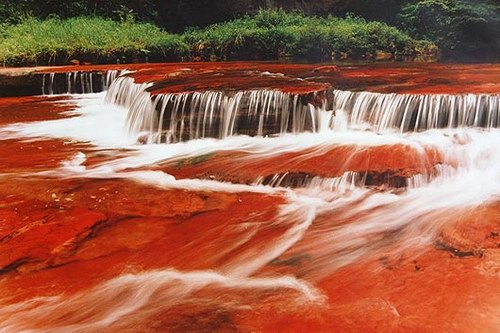

丹霞谷旅游度假区介绍
中国·丹霞谷旅游度假区，位于贵州省习水县三岔河，占地面积达80平方公里，动植物近4000种，野生动植物1600多种。地处贵州习水国家级自然保护区内，系国家级森林公园、人与生物圈保护区、国家AA-景区。景区距习水县城45公里，距重庆市中区160公里，仅3.5小时车程。距泸州150公里，3小时车程，距赤水135公里，2.5小时车程，距遵义155公里，2.5小时车程，距贵阳285公里，4小时车程。北面与重庆江津四面山国家级风景名胜区一山之隔，与四川佛宝国家级森林公园毗邻，西连贵州赤水国家级风景名胜区。南接遵义优秀旅游城市和著名的遵义会议会址、四渡赤水纪念馆等红色经典线路，同属于黔北精品旅游线。地处川、黔、渝旅游金三角的中心腹地。
中国·丹霞谷旅游度假区，丹霞谷是地球上高原峡谷青年期丹霞地貌的典型代表；为地球同纬度上面积最广，保存最完好的中亚热带常绿阔叶林带。它深藏于绿色-之中，九沟十八岔涧谷纵横，林莽苍苍，千峰竟秀，碧水萦绕。嵌入群山之间的条条沟谷叠翠千丈。一根根红色石柱在浓绿中拔地而起，傲视林层；一块块巨大厚重的红层丹崖，色彩斑斓、幻影重重，拟人拟物，栩栩如生。瀑布跌水隐匿于青山翠谷之中，宛如铺在绿树丛中的一张张网，悬挂在红岩之上的一道道帘。深邃幽静的峡谷曲流，千奇百怪的峰林石柱，神奇灵秀的丹霞洞穴，形成神奇而美丽的“峡谷大观园”。
中国丹霞谷人文景观得天独厚，博大精深，与自然景观浑然一体。清代实业家袁锦道在丹霞谷创办工厂、作坊48间，遗迹尚存。并于嘉庆十五年“不惜锱铢，请匠鸠工，穿崖凿壁”建成的望仙台石窟，造型精美，技艺精湛，被誉为贵州第一石窟。“寺祠合壁、人神共塑”世所罕见。
丹霞谷旅游度假区图片
